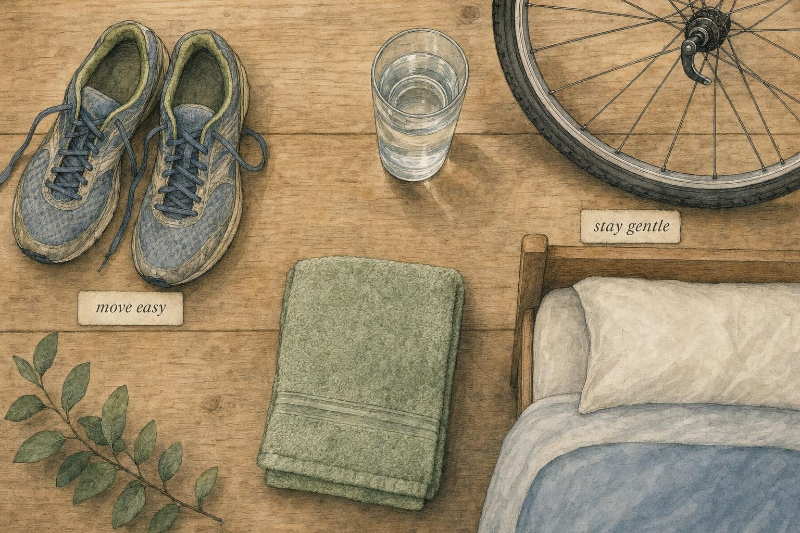
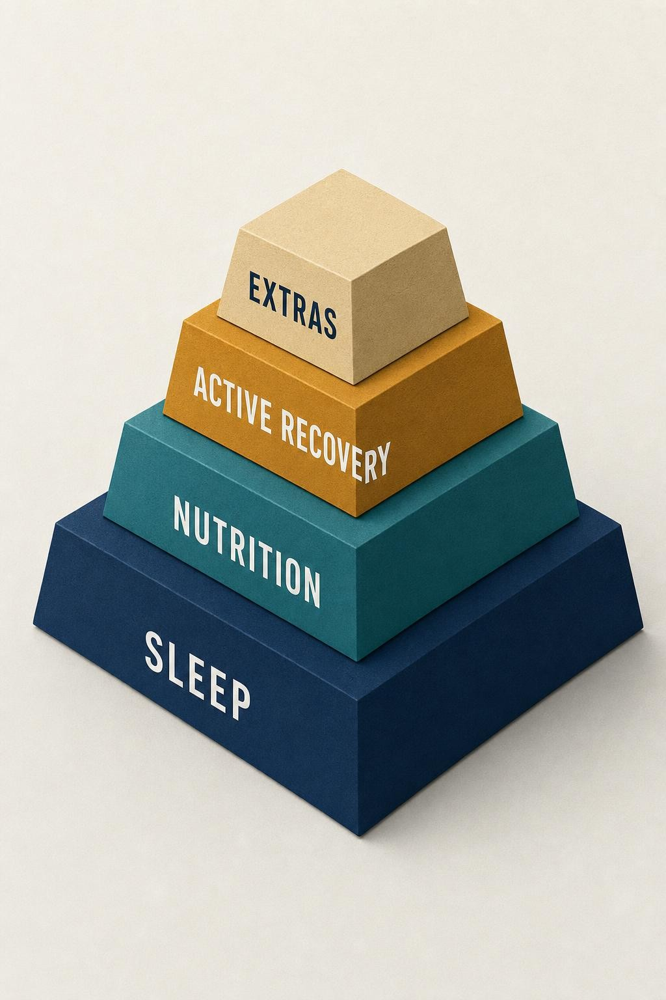

Motion Is the Medicine (Mostly)
What active recovery genuinely does, and what it was oversold as doing.
The morning after a brutal interval session, you have a choice that feels enormous. Lie flat and do nothing, or lace up for a slow spin, an easy jog, a loose swim. The folklore is emphatic: keep moving, flush it out, don't let it seize up. Coaches say it, apps prescribe it, and the language is almost plumbing, as though yesterday's effort left sludge in the pipes and today's gentle motion will rinse it clean.
The folklore is not wrong, exactly. But it is confidently pointed in a slightly misleading direction. Movement between hard sessions does real, worthwhile things. It just does not do the dramatic thing it is most famous for. This chapter is about telling those two categories apart, the genuine benefits from the marketing, so you can dose active recovery to help rather than to quietly add another training day you never scheduled.
Throughout this chapter you will follow one learner, Desmond, a 44-year-old age-group triathlete who has not missed a scheduled "recovery" ride in three years of training. Desmond genuinely believes that if he is not sweating, his body is not clearing anything, so his easy days have crept upward over time: a loose spin that starts at a whisper and ends, more often than not, holding a wheel up a false flat at a pace he would happily call moderate on any other day. He arrived at this course convinced that the discipline of never resting completely was the reason he kept improving. By the end of this chapter you will understand exactly what Desmond's habit is buying him, what it is quietly costing him, and why those two questions are not the same question. His situation is a thread, not a diagnosis, and we will be careful about that difference the whole way through.
A quick refresher, then a pivot
In Chapter 4 we retired soreness as a serious guide to recovery. Delayed onset muscle soreness (DOMS) is a low-information signal: it tracks unfamiliar eccentric loading far better than it tracks the deep tissue adaptations we actually care about, the ones from Chapters 1 through 3 where the training stimulus is converted into a fitter, more capable athlete. If soreness is a poor dashboard light, then the natural next question is behavioral: given that you cannot read your recovery off your soreness, what should you do on the day between hard efforts?
The most popular answer is active recovery, low-intensity movement performed deliberately to aid the recovery process rather than to train. Easy cycling, walking, mobility work, a relaxed swim, light circuit movement. The premise is that gentle circulation-promoting activity accelerates the return to baseline. It is pleasant, it is cheap, it feels productive, and it occupies a comfortable place in nearly every athlete's weekly plan. Our job here is not to dismiss it. Our job is to grade it honestly, the same posture that will dominate Chapter 6, and to place it correctly in a hierarchy where sleep and nutrition sit far above it.
Notice the shape of the question this chapter is really asking. It is not "does movement help." Nearly everything in human physiology responds somewhat to movement, so the answer to that narrow question is almost always yes in some small way. The more useful question, and the one worth the rest of this chapter, is comparative: how does gentle movement between sessions compare to simply resting, and at what point does gentle movement stop being gentle and start being a session in its own right? Desmond's habit lives exactly on that second boundary, and most of the confusion around active recovery lives there too.
Hold two competing intuitions side by side as you read. The first is the plumbing metaphor: effort leaves residue, movement flushes residue, therefore movement helps recovery. The second is a training-load intuition: any movement is a stimulus, stimulus accumulates, therefore movement adds to the very fatigue you are trying to resolve. Both intuitions are partly true, which is exactly why the honest answer is not a single word but a dose-response curve, and dose-response curves are what the rest of this chapter is built to make legible.

Active recovery is a collection of pleasant, low-cost habits, useful, but not foundational." data-image-idx="0" style="display:block;max-width:100%;max-height:75vh;height:auto;width:auto;margin:0 auto;cursor:pointer;">The famous claim: flushing out fatigue
Start with the mechanism everyone has heard. The story is that active recovery clears lactate, and that clearing lactate clears fatigue. It is a satisfying narrative because part of it is measurably true. According to Menzies and colleagues (2010), trained runners performed a high-intensity bout and then recovered at graded intensities from complete rest up to 100% of lactate threshold. Blood lactate did indeed clear faster with active recovery than with passive rest, and it did so in an intensity-dependent way: the fastest clearance occurred at roughly 80 to 100% of lactate threshold, not at a stroll.
Read that finding carefully, because it quietly dismantles the popular prescription. The intensity that best clears lactate is not the gentle drift people imagine, it is a firm, near-threshold effort. And the very low intensities that active-recovery advice actually recommends, 40% of lactate threshold or below, offered surprisingly little advantage over simply sitting still. So the mechanism does exist, but it points toward an intensity most people would never call "recovery," and toward a molecule that turns out not to matter the way we were told.
Because here is the deeper problem: lactate is not the villain. The stubborn image of lactic acid pooling in the muscle and causing soreness and next-day dysfunction has been obsolete in exercise physiology for decades. Contemporary physiology treats lactate mainly as a fuel, shuttled between muscle fibers, into the heart, and back to the liver, rather than as a metabolic waste product waiting to be hosed away. Blood lactate returns to baseline within an hour or so regardless of what you do; DOMS peaks a day or two later. The timelines do not even overlap, which alone should have retired the flushing metaphor years ago.
According to Ortiz and colleagues (2019), who reviewed 26 studies in competitive athletes, blood lactate clearance is an unreliable recovery marker in the first place. According to Halson (2014), who surveyed the whole landscape of fatigue monitoring from the Australian Institute of Sport, very few individual markers have strong evidence behind them, and no single definitive marker of recovery status exists. So even when active recovery moves a number, we should be cautious about assuming the number means what the folklore claims. A protocol that clears a molecule faster is not automatically a protocol that clears fatigue faster, because the molecule and the fatigue were never as tightly linked as the folklore assumed.
This is worth sitting with, because it reorganizes the whole question. If lactate clearance is not the mechanism, then what is active recovery actually doing when it helps? The honest answer, which the rest of this chapter builds toward, is a mix of genuine circulatory and psychological effects that have nothing to do with flushing anything, plus a fair amount of placebo dressed up in physiological language. Neither half of that mix is shameful. Feeling better is a real outcome. But it is a different claim than the one on the label, and the difference matters for how much stock you put in any single "recovery" ritual.
What the evidence actually supports
Let us assemble the honest ledger. The most useful single source is Dupuy and colleagues (2018), a meta-analysis of 99 studies comparing recovery modalities, active recovery, massage, cold-water immersion, compression, and others, against outcomes that span the full stack: perceived soreness, perceived fatigue, muscle damage markers such as creatine kinase (CK), and inflammatory biomarkers such as C-reactive protein (CRP) and interleukin-6 (IL-6).
On the perceptual outcomes, active recovery earns its keep. According to Dupuy and colleagues (2018), it produced a small-to-large decrease in DOMS. People feel less sore, and that is not nothing, feeling better is a legitimate outcome that we will defend in a moment. But two qualifications matter. First, the effects on the deep tissue markers, the CK and inflammatory signals that actually reflect the muscle damage and remodeling underlying adaptation, were modest and context dependent. Second, and this is the detail that should keep active recovery humble, massage outperformed active recovery on several of those same outcomes. If a modality that involves lying still and being touched beats one that involves you doing the work, then the "keep moving to clear the damage" mechanism cannot be doing the heavy lifting we imagined.
The cool-down question
A parallel line of evidence comes from Van Hooren and Peake (2018), whose narrative review asked a pointed question: do we even need a cool-down? They synthesized the research on active cool-downs versus simply stopping, and the answers are deflating for the true believer. According to Van Hooren and Peake (2018), active cool-downs are largely ineffective at enhancing same-day performance. They do not appear to prevent injuries. And, critically for the argument of this whole course, they do not attenuate the long-term adaptive response. That last point cuts both ways: the good news is that gentle movement will not blunt your gains the way we worry hard cold exposure might; the sobering news is that it also is not accelerating them.
Van Hooren and Peake did find that active cool-downs deliver genuine psychophysiological effects, you feel better, lactate clears faster in the blood, but these effects, they emphasized, do not reliably translate into performance gains. Some studies report improved next-day performance; the evidence is inconsistent. There is one more detail worth carrying forward from their review: an active cool-down can interfere with muscle glycogen resynthesis, the process by which your muscles rebuild the fuel stores a hard session drained. That is a small, specific cost that the "keep moving" folklore never mentions, and it is a preview of the finite-budget idea this chapter will return to later. This is the recurring shape of the active-recovery literature: reliable effects on how you feel, unreliable effects on what you can do, and occasional small costs on the ledger nobody advertises.
Where it does move performance
To be fair to the modality, there is a setting where active recovery earns a firmer verdict. According to Ortiz and colleagues (2019), short active-recovery sessions of roughly 6 to 10 minutes produced consistently positive effects on performance, but note the context. This is recovery between efforts within a competition or session, not recovery between days. Nalbandian and colleagues (2017) make the mechanism vivid in a crossover study: trained men doing active recovery at 60% of lactate threshold between repeated Wingate cycling bouts (a standardized 30-second maximal sprint test) showed lower blood lactate, higher blood pH, and significantly better subsequent peak and average power than those resting passively.
But the same study contains a warning against tidy mechanistic stories. According to Nalbandian and colleagues (2017), there was no significant correlation between the improved pH values and the improved performance. The metabolite moved, the performance moved, and the two did not track each other statistically. Something else, perhaps psychological readiness, perhaps a mechanism the study was not designed to isolate, was carrying part of the effect. When you cannot draw a straight line from the biomarker to the outcome, you should hold the "it flushes out fatigue" explanation loosely, even in the one setting where active recovery clearly, measurably works.
Put these threads together and a shape emerges: modest, real perceptual benefits nearly everywhere; a genuine performance benefit only in the narrow between-efforts context; and a mechanism, lactate clearance, that does not explain most of what is actually happening. The open question left standing is dosage. If lactate clears fastest near threshold, but a near-threshold effort is training rather than recovery, where exactly is the line? The widget below lets you find it for yourself.
The intensity trap: easy stays easy
The dial you just moved is the central practical idea of this chapter. Active recovery is only recovery if it stays genuinely easy. Push it past a certain point and it stops protecting the recovery window and starts consuming it, it becomes another stimulus, another withdrawal from the same account you were trying to top up.
This is where the Menzies (2010) finding becomes a trap rather than a tip. Yes, lactate clears fastest near threshold. But a near-threshold effort is training. Its metabolic and neuromuscular demands add to your accumulated load; they do not subtract from it. If you chase the fastest lactate clearance, you have simply done another workout and called it rest. The athlete who turns every "recovery" spin into a spirited group ride, or treats the recovery jog as a chance to feel fast, has quietly converted a rest day into a moderate training day, and will pay for it later in the week without ever understanding why.
According to Meeusen and colleagues (2012), the consensus statement on overtraining frames the stakes precisely. Their model describes a continuum from functional overreaching, a planned, temporary overload that supercompensates into fitness, through non-functional overreaching, and finally to overtraining syndrome, a state of prolonged underperformance that can take months to resolve. The engine that drives an athlete down that continuum is excessive overload combined with inadequate recovery. Every unnecessary hard effort dressed up as recovery pushes fractionally in the wrong direction. Active recovery that stays honestly easy is neutral to helpful; active recovery that creeps up in intensity is a slow leak in the recovery budget.
So how easy is easy enough? The literature refuses to hand you a single number. According to Fares and colleagues (2021), who reviewed 17 studies on active recovery for exercise-induced muscle damage, protocols alleviated soreness, preserved strength, improved flexibility, and reduced inflammation across various approaches, but the findings on optimal intensity, duration, and type were genuinely inconsistent from study to study. The absence of a clean prescription is itself the lesson. Rather than a percentage, use a test you can run in your own body: could you comfortably hold a conversation, and do you finish feeling refreshed rather than worked? If the honest answer to "was this actually restful?" is no, it wasn't recovery, regardless of what your training plan labeled it.
Desmond's ride is the textbook illustration. His "recovery" spin regularly drifted to a pace where conversation required real effort, and he almost always finished with legs that felt more emptied than refreshed. By the test above, most of his recovery rides were not recovery at all. They were a fourth or fifth moderate session dressed in a low-key jersey, and because they never appeared on his training log as anything but "easy," he had no way of seeing the pattern until it was named for him directly.
The benefits worth keeping
Having spent several pages puncturing the oversold claims, let me be equally clear about what survives, because active recovery is not a placebo, and treating it as worthless is its own error.
First, it makes you feel better, and this is remarkably robust. Across the Dupuy meta-analysis, the Van Hooren review, and the Ortiz review, the perceptual and psychological benefits show up again and again, often precisely where the physiological benefits are weakest. According to Ortiz and colleagues (2019), positive psychological outcomes were consistently observed even in studies that found little physiological effect. Feeling less sore, less stiff, and more ready is not an illusion to be corrected; it is a genuine outcome. An athlete who feels prepared trains with more quality and adheres to the plan more reliably, and adherence is one of the most underrated drivers of long-term progress. A program you follow at 90% quality for a year beats a theoretically perfect program you abandon in March.
Second, it maintains circulation, movement quality, and habit. Gentle movement keeps you in contact with your technique, keeps joints moving through range, and, not trivially, keeps the daily rhythm of training intact. For many athletes the psychological bridge between hard sessions matters: a rest day of complete stillness can feel like falling off the wagon, whereas a short easy session preserves identity and momentum without meaningful cost. This is not a small thing for people whose relationship with training is part of how they structure a day, a week, or an identity.
Third, in the specific between-efforts context, it demonstrably helps performance, as the Wingate and 6-to-10-minute findings showed. If you are recovering between bouts in a session or between rounds in a competition, brief active recovery is a defensible, evidence-backed tool, and one of the few places in this chapter where the evidence and the folklore actually agree.
What you should not claim is that it materially accelerates the deep tissue adaptations of Chapters 1 through 3, that it flushes out fatigue in any meaningful sense, or that it belongs anywhere near the top of the recovery hierarchy. It is useful, pleasant, and real. It is not foundational, and confusing "useful" with "foundational" is exactly the error that turns a fifteen-minute walk into a mandatory forty-five-minute ritual that nobody has time for and everybody feels guilty skipping.

The recovery hierarchy: active recovery sits well above the extras but well below the foundational levers." data-image-idx="1" style="display:block;max-width:100%;max-height:75vh;height:auto;width:auto;margin:0 auto;cursor:pointer;">When rest beats movement
Everything so far has assumed a background condition: normal training fatigue in a healthy, adapting athlete. That assumption does a great deal of quiet work, and it is worth making it explicit, because there is a category of situation where the entire active-recovery conversation is beside the point, and complete rest, or medical attention, is the correct answer instead.
Ordinary training fatigue feels diffuse, roughly symmetric where the exercise was symmetric, proportional to the work performed, and it improves, even slightly, with gentle movement and time. Watch for the situations where those features are missing. Sharp, localized pain that intensifies rather than eases during light movement is a different signal than the dull, whole-muscle ache of DOMS. Pain that appears at rest, wakes you at night, or is accompanied by swelling, spreading bruising, or a joint that feels unstable is not asking for a spin around the block. Persistent fatigue that does not respond to several full rest days, unusual heart rate patterns, or a cluster of symptoms such as unexplained weight loss, prolonged illness, or mood disturbance also sit outside the territory this chapter covers.
None of that is a diagnostic checklist, and it is not meant to function as one. It is a description of the kind of pattern that should make a person stop reaching for a recovery protocol and start reaching for a phone. The habit this chapter is building, honest grading of what a training tool actually does, only works inside its proper domain. Outside that domain, the right move is not a better recovery ride. It is a conversation with someone qualified to evaluate what is actually happening in your body.
Even within the healthy range this chapter is built for, rest can simply be the better tool. Consider three situations where skipping the "recovery" session entirely, in favor of doing nothing structured, tends to outperform any amount of gentle movement. The first is accumulated sleep debt. If you are carrying several nights of short or fragmented sleep, the marginal minutes you would spend on an easy ride are almost always worth more spent horizontal. Sleep drives the deep tissue repair and hormonal recovery that active recovery barely touches, and no amount of circulation-promoting movement substitutes for it. The second is a genuinely depleted energy state, the kind that follows a long race, a multi-day event, or a period of under-fueling. Adding any activity, however gentle, on top of a real energy deficit asks a tapped-out system for one more withdrawal it cannot comfortably make. The third is the early window after an injury or a flare of joint or tendon pain, where "keep it gently moving" advice belongs to a rehabilitation plan designed by someone who has actually examined the tissue, not to a generic active-recovery habit borrowed from an entirely different context.
The practical rule that falls out of this section is simple to state and harder to practice: default to gentle movement when you are dealing with ordinary, diffuse, proportional training fatigue in an otherwise healthy state, and default to genuine rest, or to a clinician's assessment, whenever the pattern of what you are feeling breaks from that description. Desmond's case, which we will look at closely in a moment, sits inside the healthy range. His problem was never that he should have rested completely. His problem was that his version of "easy" had quietly stopped being easy.
The finite budget: what active recovery competes with
Here is the idea that reorganizes everything. Recovery is not a set of independent switches you can all flip to "on." It draws on a finite budget, of time, of energy, of physiological capacity, and, crucially, of attention and motivational bandwidth. Every recovery activity you undertake competes with every other one. According to Meeusen and colleagues (2012), non-training stressors, poor sleep, inadequate nutrition, psychological stress, all feed into the same overtraining continuum as training itself. Your body does not maintain separate ledgers for "training stress" and "life stress." There is one account, and every entry, welcome or not, gets posted to it.
This means active recovery is not free even when it stays easy. An ambitious 75-minute recovery ride costs you time you might have spent sleeping, glycogen and energy your muscles need for actual repair, and, subtly but really, the mental energy of planning, executing, and fussing over it. The athlete who pours attention into an elaborate recovery protocol, complete with the perfect duration and the ideal heart-rate ceiling, may be spending on a modest lever the care that belongs to the two enormous ones.
And those two are not close. Sleep and nutrition are the foundational recovery levers, the ones with large, well-established effects on the deep adaptations that active recovery barely touches. If a recovery ride eats into your sleep, or leaves you too depleted to eat and refuel well, it has produced a net negative even though the ride itself felt virtuous. This is the honest-grading posture the whole course is building toward: not "is this thing good?" but "is this thing worth what it costs, given what else the budget must cover?"
There is a further wrinkle worth naming: the budget is not identical every day. A heavy work week, a poor night of sleep, a stretch of emotional stress, all of these shrink the total capacity available before you have done a single minute of active recovery. On a day when the budget is already thin, the same 45-minute session that was harmless last Tuesday can be the difference between an adequate week and an accumulating deficit. Treating "recovery ride, 45 minutes" as a fixed prescription, independent of everything else happening in your life that week, is a subtler version of the same mistake as pushing the pace too high. Both treat active recovery as though it existed in a vacuum, when it never does.
Case study: Desmond and the ride that was not recovery
Run Desmond's habit through this chapter and the picture sharpens quickly. Start with the belief driving the behavior: that harder movement clears more fatigue, so an easy ride done properly hard would clear the most fatigue of all. According to Menzies and colleagues (2010), lactate clearance genuinely is fastest near threshold, so in one narrow sense Desmond is not wrong about the biology. But lactate clearance was never the mechanism carrying most of active recovery's real benefit, and a near-threshold effort is training, not recovery, regardless of what it does to a single metabolite. Desmond has been optimizing the wrong variable with real diligence.
Move to the cost side of the ledger. According to Meeusen and colleagues (2012), the overtraining continuum is driven by the accumulation of overload without adequate recovery, and Desmond's Wednesday ride is functioning as a fourth demanding session in a week that already contains three others. His Thursday long run, the session his Wednesday ride is supposed to be protecting, is the one paying the price. He interpreted his heavier Thursday legs as a sign he needed to train through more fatigue, when the more accurate reading is that his "recovery" day had stopped doing its job.
Now the finite-budget question. Desmond's Wednesday ride costs him roughly 45 minutes that could otherwise go toward an earlier bedtime, and it costs him enough neuromuscular and metabolic fatigue that his appetite and sleep quality both suffer slightly that evening, by his own report. None of this shows up as an injury or an illness. It shows up as a slow accumulation that he has been unable to see, because every individual Wednesday looked, on paper, like a rest day.
What changed once the pattern was named was not dramatic. Desmond did not need to stop riding on Wednesdays, and nothing here suggests he was overtraining in a clinical sense, nor is that a judgment this course is positioned to make about him or anyone else. What he needed was a concrete test to apply in the moment: could he hold a full conversation at that pace, and did he finish the ride feeling more refreshed than when he started. Applying that test honestly, most weeks, meant riding measurably slower than habit demanded, which felt at first like doing less. It was not doing less. It was finally doing the thing the session was supposed to be for.
Placing it correctly
Put the pieces together and a clear working model emerges. Active recovery is a real tool with a narrow, honestly graded role. It reliably improves how you feel and supports adherence and habit. It helps performance between efforts within a session. It does not meaningfully accelerate deep tissue repair, does not "flush" anything worth flushing, and does not blunt your adaptations either. Its intensity must be kept genuinely easy, because past a low ceiling it stops being recovery and becomes an unplanned stimulus. It competes for a finite budget dominated by sleep and nutrition, which means it can produce a net negative when it crowds out the levers that actually matter. And there is a category of situation, injury, illness, accumulated sleep debt, genuine depletion, where the entire question of dosing active recovery is beside the point, because rest, or a clinician's evaluation, is the correct answer instead.
This posture, useful, pleasant, real, but nowhere near foundational, is the template for the honest grading you will apply to every modality in Chapter 6. It also sets up the two questions the rest of the course keeps asking. When you notice a "recovery" session creeping up in intensity, the way Desmond's did for three years before anyone named it, you are really asking whether your training needs a planned reduction, the deload of Chapter 7. And when you weigh active recovery against sleep, nutrition, and life stress in a single budget, you are practicing the total load management of Chapter 8. Learn to ask, of anything you do in the name of recovery, one plain question: is this actually restful? If it is, keep it. If it is not, you've found training wearing a costume.
Successful training must involve overload, but must also avoid the combination of excessive overload with inadequate recovery.
Meeusen et al. (2012), ECSS-ACSM consensus statement
Key Takeaways
- Active recovery reliably improves how you feel and supports soreness perception, habit, and adherence, but its effect on the deep tissue adaptations of Chapters 1 through 3 is modest (Dupuy et al., 2018; Van Hooren & Peake, 2018).
- The "flush out fatigue, clear lactate" mechanism is largely a myth: lactate is not the villain, clearance is fastest near threshold rather than at an easy drift, and lactate is an unreliable recovery marker anyway (Menzies et al., 2010; Ortiz et al., 2019; Halson, 2014).
- Easy must stay easy. Pushed past a low intensity ceiling, "recovery" becomes another stimulus that spends the recovery budget instead of protecting it (Meeusen et al., 2012).
- Active recovery genuinely helps performance between efforts within a session (6 to 10 minutes; between-bout protocols), even where the biomarker mechanism doesn't cleanly explain it (Ortiz et al., 2019; Nalbandian et al., 2017).
- Rest, not movement, is the better tool during accumulated sleep debt, genuine energy depletion, and the early window after an injury, and sharp or worsening pain is a signal to seek a qualified clinician rather than a recovery protocol.
- Recovery is a single finite budget. Ambitious active recovery that crowds out sleep or nutrition can net negative, foundations first, movement second.
Chapter 6 turns the honest-grading posture on the whole menu of recovery modalities, cold-water immersion, compression, massage, foam rolling, and the rest. We'll rank them not by how good they feel or how well they market, but by what the evidence says they actually do to fatigue, soreness, and adaptation. Some cherished tools survive the grading. Several do not.
References
Dupuy, O., Douzi, W., Theurot, D., Bosquet, L., & Dugué, B. (2018). An evidence-based approach for choosing post-exercise recovery techniques to reduce markers of muscle damage, soreness, fatigue, and inflammation: A systematic review with meta-analysis. Frontiers in Physiology, 9, 403. https://doi.org/10.3389/fphys.2018.00403
Fares, R., Vicente-Rodríguez, G., & Olmedillas, H. (2021). Effect of active recovery protocols on the management of symptoms related to exercise-induced muscle damage: A systematic review. Strength and Conditioning Journal, 44(1), 57-70. https://doi.org/10.1519/ssc.0000000000000654
Halson, S. L. (2014). Monitoring training load to understand fatigue in athletes. Sports Medicine, 44(Suppl 2), 139-147. https://doi.org/10.1007/s40279-014-0253-z
Meeusen, R., Duclos, M., Foster, C., Fry, A., Gleeson, M., Nieman, D., Raglin, J., Rietjens, G., Steinacker, J., & Urhausen, A. (2012). Prevention, diagnosis and treatment of the overtraining syndrome: Joint consensus statement of the European College of Sport Science and the American College of Sports Medicine. European Journal of Sport Science, 13(1), 1-24. https://doi.org/10.1080/17461391.2012.730061
Menzies, P., Menzies, C., McIntyre, L., Paterson, P., Wilson, J., & Kemi, O. J. (2010). Blood lactate clearance during active recovery after an intense running bout depends on the intensity of the active recovery. Journal of Sports Sciences, 28(9), 975-982. https://doi.org/10.1080/02640414.2010.481721
Nalbandian, H. M., Radak, Z., & Takeda, M. (2017). Active recovery between interval bouts reduces blood lactate while improving subsequent exercise performance in trained men. Sports, 5(2), 40. https://doi.org/10.3390/sports5020040
Ortiz, R. O., Sinclair Elder, A. J., Elder, C. L., & Dawes, J. J. (2019). A systematic review on the effectiveness of active recovery interventions on athletic performance of professional-, collegiate-, and competitive-level adult athletes. Journal of Strength and Conditioning Research, 33(8), 2275-2287. https://doi.org/10.1519/jsc.0000000000002589
Van Hooren, B., & Peake, J. M. (2018). Do we need a cool-down after exercise? A narrative review of the psychophysiological effects and the effects on performance, injuries and the long-term adaptive response. Sports Medicine, 48(7), 1575-1595. https://doi.org/10.1007/s40279-018-0916-2